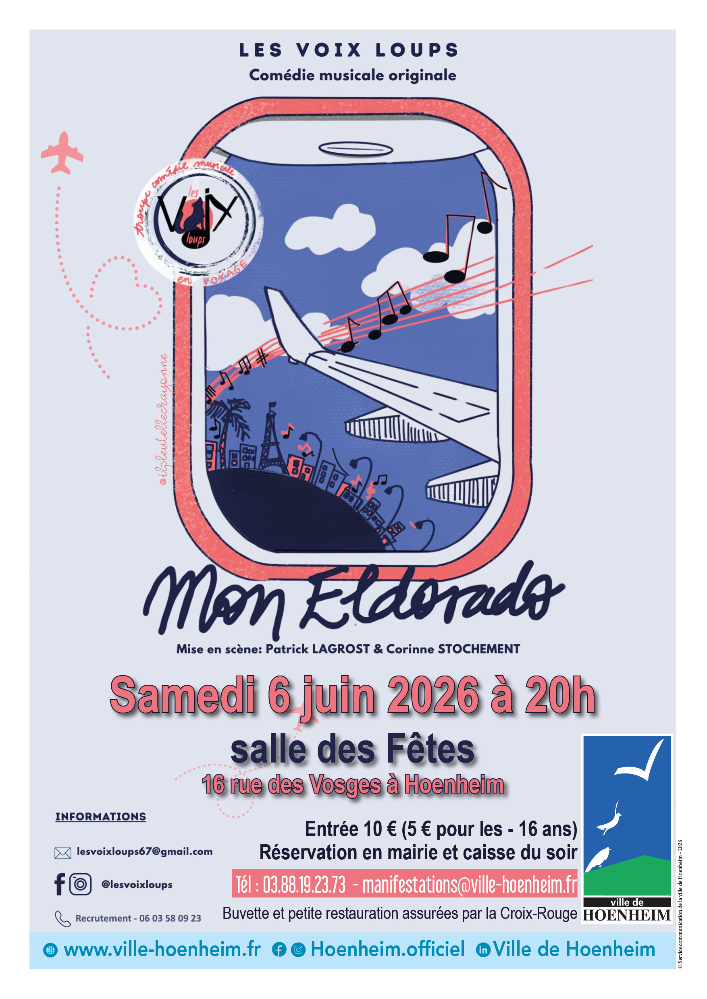

- Cet événement est terminé
Spectacle – Mon Eldorado par la troupe Les Voix Loups
6 juin à 20 h 00 min - 22 h 00 min
Navigation de l'événement

Venez découvrir le spectacle Mon Eldorado par la troupe Les Voix Loups samedi 6 juin 2026 à 20h à la Salle des fêtes – Hoenheim.
Présentation du spectacle
La troupe vocale hoenheimoise Les Voix Loups vous invite à découvrir son spectacle Mon Eldorado, une comédie musicale originale mêlant chant, danse et théâtre.
À travers une vingtaine de chansons issues principalement de la variété française des années 60 à aujourd’hui, le spectacle propose un voyage familial, convivial et plein d’émotions. Les tableaux musicaux, entièrement harmonisés et chorégraphiés, sont ponctués de scénettes théâtrales, entre humour et sensibilité.
Un moment de partage et d’évasion, porté par une belle énergie collective, pour faire rêver petits et grands.
La troupe
Créée en mai 2023, Les Voix Loups est une troupe composée d’une quinzaine de choristes amateurs passionnés, réunissant chanteurs, danseurs et comédiens.
- Patrick Lagrost, fort de plus de 25 ans d’expérience en tant que chef de chœur, harmonisateur et metteur en scène, assure la direction artistique.
- Corinne Stochement apporte sa créativité à travers les costumes, les chorégraphies et la cohésion du groupe.
La troupe se réunit chaque semaine pour les répétitions, ainsi que lors de sessions intensives pour peaufiner ses spectacles, avec l’ambition de se produire sur les scènes régionales.
Après plusieurs représentations au Théâtre du Cube Noir à Strasbourg en octobre 2025, la troupe est heureuse de venir à la rencontre du public hoenheimois.
Tarifs et réservations
- Entrée : 10 €
- Tarif réduit (-16 ans) : 5 €
Réservations :
- En mairie ou sur place le soir du spectacle
service Animation, Culture et Protocole 28 rue de la République – Tél. : 03 88 19 23 73 – manifestations@ville-hoenheim.fr
Un spectacle festif et chaleureux à ne pas manquer !